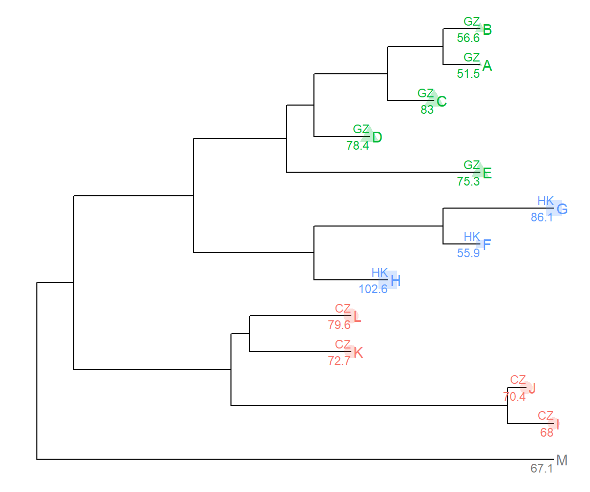
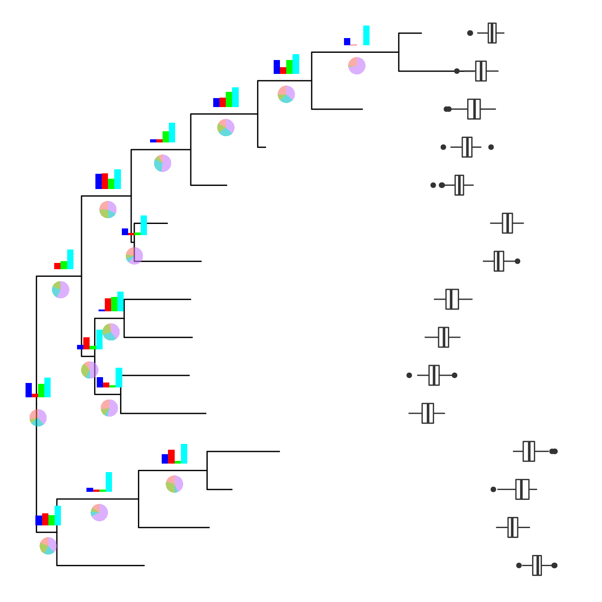
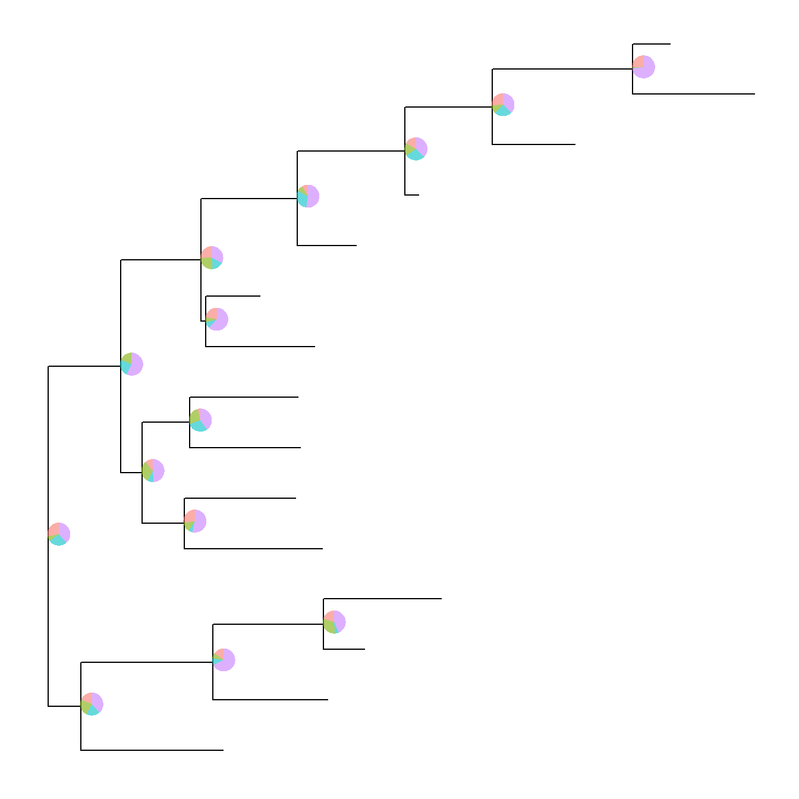
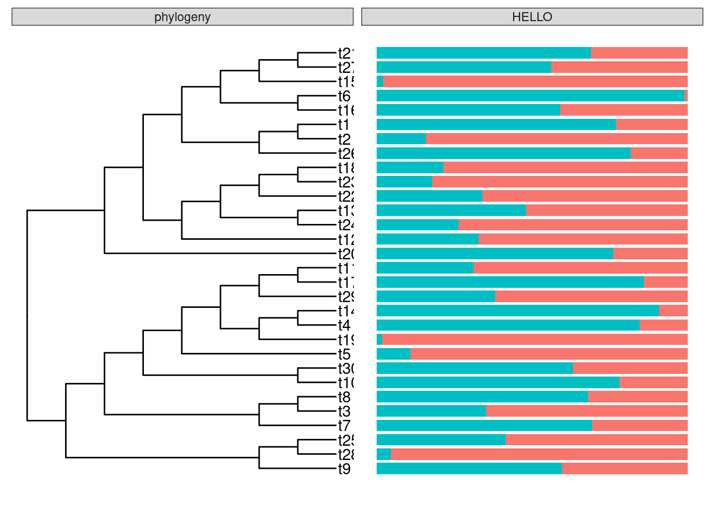
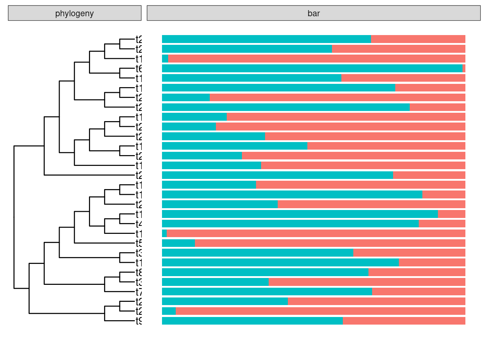
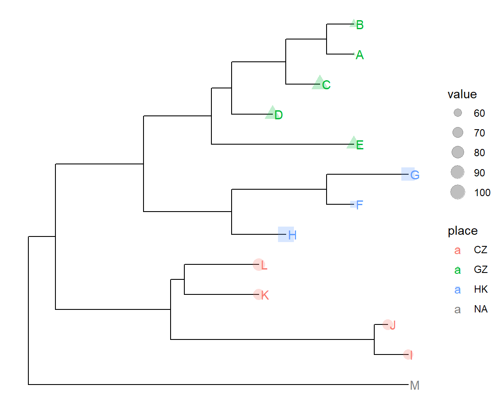
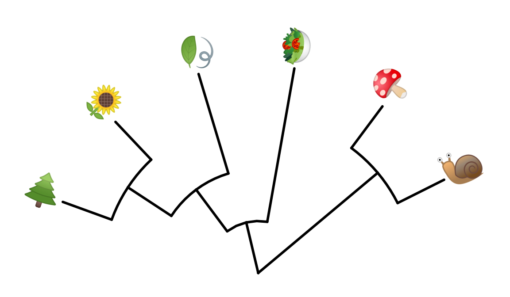

Chapter 7 Plotting tree with data
Integrating user data to annotate phylogenetic tree can be done at different
levels. The treeio package implements full_join methods to
combine tree data to phylogenetic tree object.
The tidytree package supports linking tree data to phylogeny
using tidyverse verbs.
ggtree supports mapping external data to phylogeny for
visualization and annotation on the fly.
7.0.1 The %<+% operator
Suppose we have the following data that associate with the tree and would like to attach the data in the tree.
nwk <- system.file("extdata", "sample.nwk", package="treeio")
tree <- read.tree(nwk)
p <- ggtree(tree)
dd <- data.frame(taxa = LETTERS[1:13],
place = c(rep("GZ", 5), rep("HK", 3), rep("CZ", 4), NA),
value = round(abs(rnorm(13, mean=70, sd=10)), digits=1))
## you don't need to order the data
## data was reshuffled just for demonstration
dd <- dd[sample(1:13, 13), ]
row.names(dd) <- NULLprint(dd)| taxa | place | value |
|---|---|---|
| D | GZ | 78.4 |
| K | CZ | 72.7 |
| C | GZ | 83.0 |
| H | HK | 102.6 |
| E | GZ | 75.3 |
| M | NA | 67.1 |
| J | CZ | 70.4 |
| A | GZ | 51.5 |
| B | GZ | 56.6 |
| L | CZ | 79.6 |
| F | HK | 55.9 |
| I | CZ | 68.0 |
| G | HK | 86.1 |
We can imaging that the place column stores the location that we isolated the species and value column stores numerical values (e.g. bootstrap values).
We have demonstrated using the operator, %<%, to update a tree view with a new
tree. Here, we will introduce another operator, %<+%, that attaches annotation
data to a tree view. The only requirement of the input data is that its first
column should be matched with the node/tip labels of the tree.
After attaching the annotation data to the tree by %<+%, all the columns in
the data are visible to ggtree. As an example, here we attach the
above annotation data to the tree view, p, and add a layer that showing the
tip labels and colored them by the isolation site stored in place column.
p <- p %<+% dd + geom_tiplab(aes(color=place)) +
geom_tippoint(aes(size=value, shape=place, color=place), alpha=0.25)
p + theme(legend.position="right")
Once the data was attached, it is always attached. So that we can add other layers to display these information easily.
p + geom_text(aes(color=place, label=place), hjust=1, vjust=-0.4, size=3) +
geom_text(aes(color=place, label=value), hjust=1, vjust=1.4, size=3)
7.1 Visualize tree with associated matrix
The gheatmap function is designed to visualize phylogenetic tree with heatmap of associated matrix.
In the following example, we visualized a tree of H3 influenza viruses with their associated genotype.
beast_file <- system.file("examples/MCC_FluA_H3.tree", package="ggtree")
beast_tree <- read.beast(beast_file)
genotype_file <- system.file("examples/Genotype.txt", package="ggtree")
genotype <- read.table(genotype_file, sep="\t", stringsAsFactor=F)
colnames(genotype) <- sub("\\.$", "", colnames(genotype))
p <- ggtree(beast_tree, mrsd="2013-01-01") + geom_treescale(x=2008, y=1, offset=2)
p <- p + geom_tiplab(size=2)
gheatmap(p, genotype, offset=5, width=0.5, font.size=3, colnames_angle=-45, hjust=0) +
scale_fill_manual(breaks=c("HuH3N2", "pdm", "trig"), values=c("steelblue", "firebrick", "darkgreen"))
The width parameter is to control the width of the heatmap. It supports another parameter offset for controlling the distance between the tree and the heatmap, for instance to allocate space for tip labels.
For time-scaled tree, as in this example, it’s more often to use x axis by using theme_tree2. But with this solution, the heatmap is just another layer and will change the x axis. To overcome this issue, we implemented scale_x_ggtree to set the x axis more reasonable.
p <- ggtree(beast_tree, mrsd="2013-01-01") + geom_tiplab(size=2, align=TRUE, linesize=.5) + theme_tree2()
pp <- (p + scale_y_continuous(expand=c(0, 0.3))) %>%
gheatmap(genotype, offset=8, width=0.6, colnames=FALSE) %>%
scale_x_ggtree()
pp + theme(legend.position="right")
7.2 Visualize tree with multiple sequence alignment
With msaplot function, user can visualize multiple sequence alignment with phylogenetic tree, as demonstrated below:
fasta <- system.file("examples/FluA_H3_AA.fas", package="ggtree")
msaplot(ggtree(beast_tree), fasta)
A specific slice of the alignment can also be displayed by specific window parameter.
msaplot(ggtree(beast_tree), fasta, window=c(150, 200)) + coord_polar(theta='y')
7.3 Plot tree with associated data
For associating phylogenetic tree with different type of plot produced by user’s data, ggtree provides facet_plot function which accepts an input data.frame and a geom function to draw the input data. The data will be displayed in an additional panel of the plot.
tr <- rtree(30)
d1 <- data.frame(id=tr$tip.label, val=rnorm(30, sd=3))
p <- ggtree(tr)
p2 <- facet_plot(p, panel="dot", data=d1, geom=geom_point, aes(x=val), color='firebrick')
d2 <- data.frame(id=tr$tip.label, value=abs(rnorm(30, mean=100, sd=50)))
facet_plot(p2, panel='bar', data=d2, geom=geom_segment, aes(x=0, xend=value, y=y, yend=y), size=3, color='steelblue') + theme_tree2()